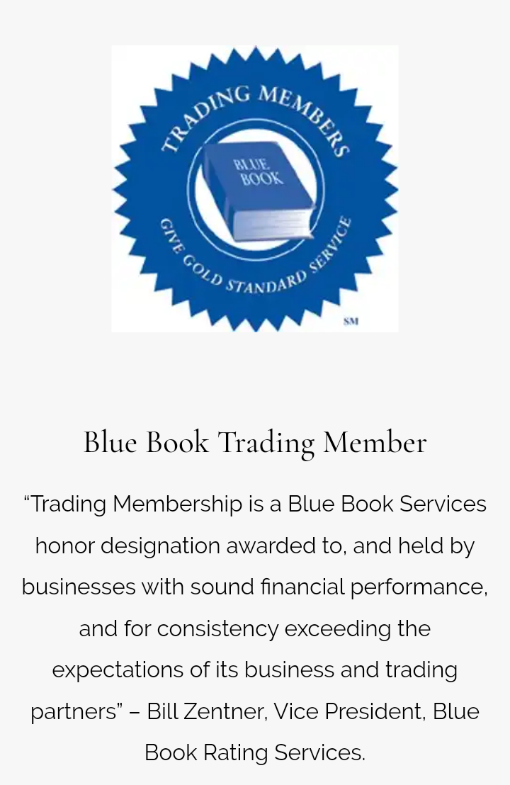

FSSC 22000 The FSSC 22000 Food Safety System Certification provides a framework for effectively managing food safety responsibilities. FSSC 22000 is fully recognized by the Global Food Safety Initiative (GFSI) and is based on existing ISO Standards. In the past few years we have seen real growth in our business which we attribute to our focus on delivering quality and service to all our customers both large and small. We also know that to continuously meet quality standards and deliver best in class service we must constantly change, improve and evolve. In 2017 after much work, training and attention to detail we are proud to say that we achieved the FSC22000 food standard certification. The food standards certification is key to the ongoing growth of our business and to making sure we meet the needs of our large retail customers whom we ship to nationally across Canada. What does this mean for you? It means Canadian Fruit & Produce Co has committed significant time, resources and attention to ensure their staff are properly trained, follow strict guidelines and work in a facility that meets strict standards and quality control. If you would like to learn more about this Food Safety initiative please visit FSSC22000.COM
